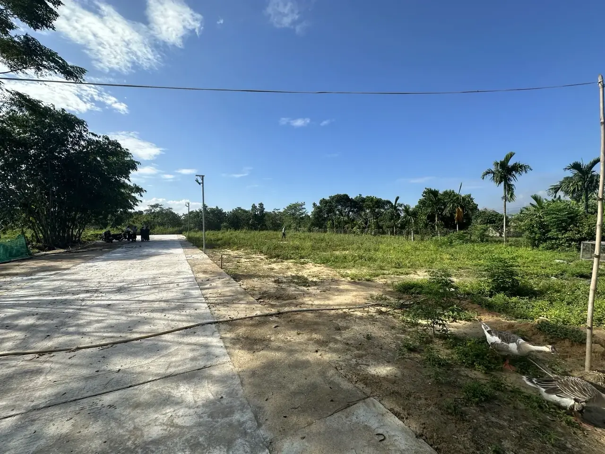
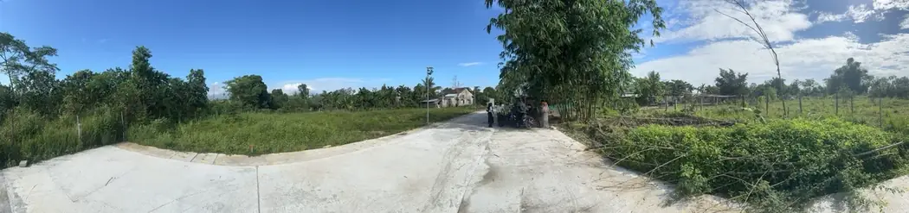
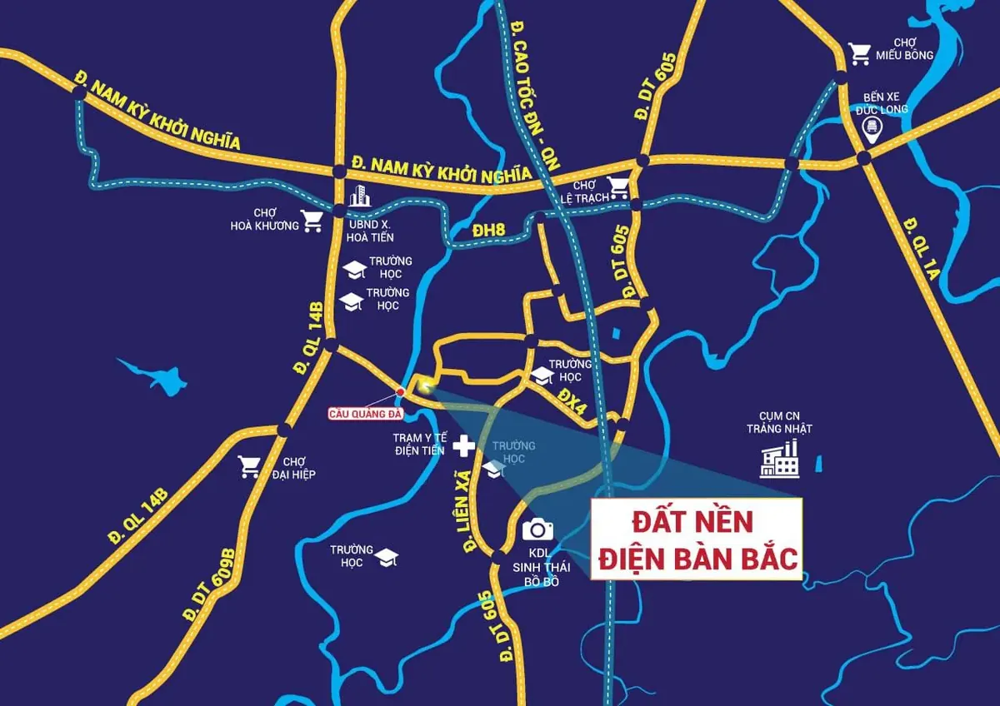
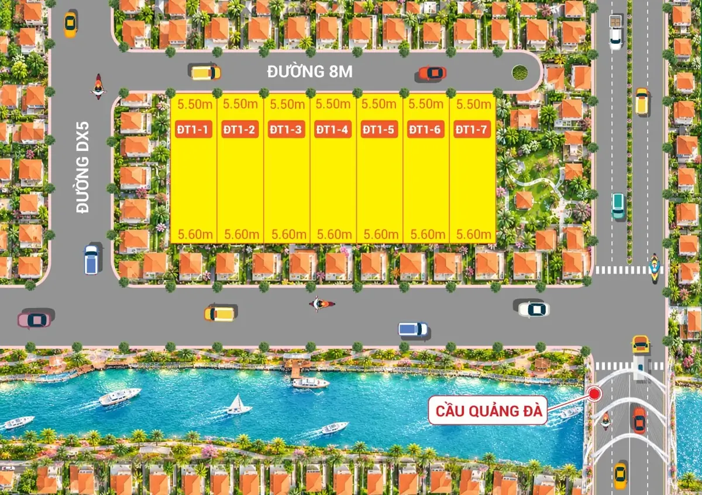

Cầu Quảng Đà
Mô tả khảo sát cách khoảng 200 m. Theo tin ngày 19/10/2026, đường dẫn phía Điện Bàn Bắc còn dang dở; cần cập nhật trước khi tính thời gian đi lại.

ẢNH THỰC ĐỊA DO NHÓM CUNG CẤPXem ảnh thực địa, vị trí và góc nhìn đầu tư Điện Bàn Bắc trong bối cảnh khu công nghiệp VSIP Đà Nẵng có kế hoạch triển khai đến 2031. Nhận hồ sơ để kiểm tra trước khi quyết định.
Ảnh nguồn dự án · Hồ sơ kiểm tra theo từng lô · Không cam kết tăng giá hay lợi nhuận.
NẮM THÔNG TIN TRONG 30 GIÂY
Vị trí Điện Tiến – phường Điện Bàn Bắc, Đà Nẵng; hồ sơ mô tả gần cầu Quảng Đà (~200 m, cần đo lại).
Động lực dài hạn VSIP 249,8 ha với lộ trình đến quý IV/2031; nhu cầu lao động và cư trú hiện chưa được lượng hóa.
Thẩm định Kiểm tra giá, loại đất, quy hoạch, đường vào, khả năng khai thác và tình trạng từng mã lô trước giao dịch.
GÓC NHÌN NHÀ ĐẦU TƯ
Nó bắt đầu từ hạ tầng, nơi làm việc, nhu cầu cư trú và nhịp sống mới. Với Điện Bàn Bắc, kế hoạch VSIP Đà Nẵng là một dữ kiện đáng theo dõi — nhưng cơ hội đầu tư chỉ có ý nghĩa khi được kiểm chứng trên từng lô đất.
Thu hút đầu tư thứ cấp và tạo việc làm nếu dự án triển khai thuận lợi.
Quy mô thực tế phụ thuộc số cơ sở hoạt động và xu hướng tuyển dụng.
Hộ gia đình, nhà thuê và lưu trú có thể hình thành theo nhu cầu thực.
Ăn uống, cửa hàng, giáo dục, y tế và tiện ích phát triển khi đủ nhu cầu.
Chuỗi tác động trên là kịch bản kinh tế có điều kiện; chưa có số liệu xác nhận tổng số công nhân sẽ về VSIP Đà Nẵng hoặc nhu cầu thuê tại vị trí khu đất.
HẠ TẦNG & DÒNG THỜI GIAN
249,8 ha không phải một lời hứa rằng giá đất sẽ tăng. Đó là quy mô dự án được công bố, từ đó người mua có thể theo dõi các cột mốc tạo việc làm và nhu cầu sống thực tế.
Xem nguồn thông tin VSIP chính thức
Thủ tục triển khai theo tiến độ công bố; kiểm tra hiện trạng và các thông báo chính thức.
Giải phóng mặt bằng dự kiến theo giai đoạn; thời gian hoàn thành có thể thay đổi.
Đây là thời điểm theo kế hoạch, chưa phản ánh số doanh nghiệp hoặc lao động đã vào thực tế.
Theo lộ trình công bố. Tốc độ tuyển dụng, cư trú và dịch vụ cần theo dõi sau khi các doanh nghiệp triển khai.
VỊ TRÍ & KẾT NỐI
Gần cầu Quảng Đà theo mô tả khảo sát khoảng 200 m. Hãy bắt đầu từ ảnh thật, sau đó đối chiếu sơ đồ, tuyến đường và tọa độ thửa trước khi đánh giá vị trí.

Mô tả khảo sát cách khoảng 200 m. Theo tin ngày 19/10/2026, đường dẫn phía Điện Bàn Bắc còn dang dở; cần cập nhật trước khi tính thời gian đi lại.
Sơ đồ nguồn nhắc đến các hướng QL14B, ĐT605, Nam Kỳ Khởi Nghĩa. Quãng đường và khả năng tiếp cận từng tuyến cần đo thực địa.
Chợ Lệ Trạch, trường học, trạm y tế Điện Tiến là các điểm gợi ý khảo sát. Không mặc nhiên khẳng định tất cả tiện ích ở sát lô đất.
GIỎ SẢN PHẨM THAM KHẢO
Danh sách từ bảng nội bộ ngày 02/11/2026; diện tích cần đối chiếu giấy tờ, trạng thái còn bán và giá cần xác nhận. Không phải toàn bộ nguồn cung thị trường.
Số liệu và mã sản phẩm chỉ phản ánh bảng tham khảo. Không tự động xác nhận nguồn cung hiện tại, loại đất hoặc điều kiện giao dịch; chính sách giá phụ thuộc phương án thanh toán được duyệt.

KỲ VỌNG VÀ RỦI RO
Không ai có thể xác nhận chắc chắn quy mô dân cư hay mức tăng giá khi một dự án chưa hoàn thành. Hãy chuẩn bị phương án cho nhiều kết quả khác nhau.
Doanh nghiệp, việc làm và dịch vụ hình thành theo giai đoạn; các vị trí có kết nối và pháp lý phù hợp có thể được chú ý.
Hạ tầng triển khai theo tiến độ, cư trú tăng dần; nhà đầu tư cần sức chịu đựng vốn trong nhiều năm.
Giải phóng mặt bằng, hạ tầng hoặc số lao động không như dự kiến; quỹ nhà thuê cạnh tranh và thanh khoản thấp.
GÓC NHÌN HIỆN TRẠNG
Ảnh chụp khu vực do nhóm dự án cung cấp. Các ảnh chụp không thay thế đo đạc, xác nhận ranh giới hoặc hồ sơ quyền sử dụng đất.
CÂU HỎI THƯỜNG GẶP
Những câu trả lời quan trọng giúp người mua tách thông tin đã xác nhận khỏi triển vọng đang chờ theo dõi.
Nhận checklist thẩm định ↗Chưa có căn cứ để nói đã vận hành trong năm 2026. Theo thông tin công bố, giai đoạn xây dựng và đưa công trình vào hoạt động hoặc khai thác kéo dài đến quý IV/2031; tiến độ thực tế cần tiếp tục cập nhật.
Chưa có số lao động thực tế được xác nhận để dùng làm dự báo cụ thể cho thửa đất này. Nhu cầu cư trú sẽ phụ thuộc doanh nghiệp tuyển dụng, nơi ở sẵn có, thu nhập và lựa chọn đi lại.
Thông tin ngày 19/10/2026 cho thấy đường dẫn phía Điện Bàn Bắc còn dang dở. Đội ngũ cần kiểm tra lại trạng thái thông tuyến, đo quãng đường thực tế trước khi tư vấn thời gian di chuyển.
Thông tin mã lô và diện tích trên trang được lấy từ bảng nội bộ ngày 02/11/2026, chưa thay thế hồ sơ thửa. Giá, điều kiện thanh toán, tình trạng còn bán, mục đích sử dụng và pháp lý phải được người phụ trách xác nhận riêng.
Chỉ có thể kết luận sau khi kiểm tra mục đích sử dụng đất, quy hoạch, điều kiện cấp phép xây dựng và yêu cầu liên quan. Không nên tính dòng tiền phòng trọ trước khi xác nhận khả năng triển khai hợp pháp.
Không. Biểu mẫu chỉ để đội ngũ liên hệ trao đổi thông tin và sắp xếp khảo sát khi khách đồng ý; không phải giao dịch đặt cọc hay cam kết mua bất động sản.
THÔNG TIN DÀNH CHO NGƯỜI QUAN TÂM
Để lại thông tin để nhận ảnh thực địa, bản đồ tham khảo, thông số các mã lô được xác nhận và tư vấn lịch khảo sát. Đội ngũ sẽ kiểm tra dữ liệu trước khi trao đổi.
Điền tên và số điện thoại để yêu cầu tư vấn. Chúng tôi sẽ liên hệ khi đã xác minh thông tin bạn quan tâm.